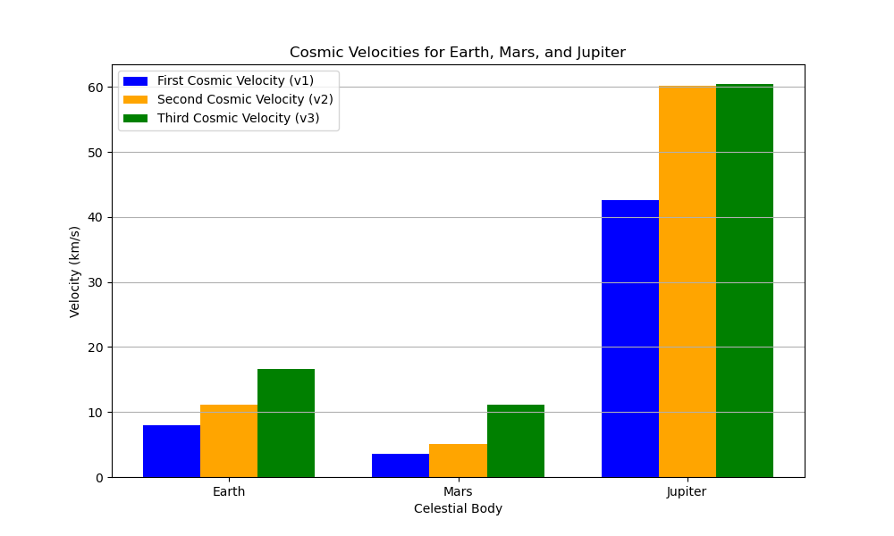

Problem 2
Escape Velocities and Cosmic Velocities
Introduction This document explores the concepts of escape velocity and the first, second, and third cosmic velocities, which are fundamental to space exploration. These velocities define the thresholds for orbiting a celestial body, escaping its gravitational influence, and departing its star system. The analysis includes:
Definitions and physical meanings of these velocities. Mathematical derivations and influencing parameters. Calculations and visualizations for Earth, Mars, and Jupiter. Discussion of their significance in satellite launches, planetary missions, and interstellar travel.
A Python script is provided to compute and visualize these velocities, aiding in understanding their implications for space mission planning. Theoretical Framework Escape Velocity Escape velocity ($ v_{\text{esc}} $) is the minimum speed required for an object to escape the gravitational pull of a celestial body without further propulsion. It is derived from the conservation of mechanical energy, where the total energy (kinetic + potential) at the surface equals zero at infinity: [ \frac{1}{2} m v_{\text{esc}}^2 - \frac{G M m}{r} = 0 ] Solving for $ v_{\text{esc}} $: [ v_{\text{esc}} = \sqrt{\frac{2 G M}{r}} = \sqrt{\frac{2 \mu}{r}} ] where:
$ G = 6.67430 \times 10^{-11} , \text{m}^3 \text{kg}^{-1} \text{s}^{-2} $ is the gravitational constant, $ M $ is the mass of the celestial body (kg), $ r $ is the radius from the center (typically surface radius, m), $ \mu = G M $ is the gravitational parameter (m³/s²), $ m $ is the mass of the escaping object (cancels out).
Cosmic Velocities The cosmic velocities are specific thresholds related to orbital and escape dynamics, often defined in the context of Earth but applicable to other bodies:
First Cosmic Velocity ($ v_1 $): The minimum speed for a circular orbit at the surface of a celestial body (orbital velocity):
[ v_1 = \sqrt{\frac{G M}{r}} = \sqrt{\frac{\mu}{r}} ] This assumes a low-altitude circular orbit, neglecting atmospheric drag.
Second Cosmic Velocity ($ v_2 $): Equivalent to the escape velocity, the speed required to escape the gravitational field:
[ v_2 = v_{\text{esc}} = \sqrt{\frac{2 G M}{r}} = \sqrt{2} v_1 ]
Third Cosmic Velocity ($ v_3 $): The speed required to escape the star system (e.g., the Solar System for Earth) from the surface of the celestial body. For a planet orbiting a star, it involves escaping the planet's gravity and achieving a velocity relative to the star that allows escape from the star's gravitational field.
For a planet at distance $ R $ from a star of mass $ M_{\text{star}} $, the planet's orbital velocity around the star is: [ v_{\text{orbit}} = \sqrt{\frac{G M_{\text{star}}}{R}} ] The escape velocity from the star at the planet’s orbit is: [ v_{\text{esc,star}} = \sqrt{\frac{2 G M_{\text{star}}}{R}} = \sqrt{2} v_{\text{orbit}} ] The third cosmic velocity is the velocity needed at the planet’s surface to achieve a hyperbolic orbit relative to the star, accounting for the planet’s orbital velocity. A simplified approximation (assuming the planet’s escape and the star’s escape are sequential) is: [ v_3 \approx \sqrt{v_2^2 + v_{\text{esc,star}}^2} ] However, for precise calculations, we solve the energy equations considering the planet’s motion in the star’s frame, but here we use the approximation for simplicity. Parameters Affecting Velocities
Mass ($ M \(): Higher mass increases gravitational pull, raising all cosmic velocities. Radius (\) r \(): Larger radius reduces velocities due to inverse dependence. Distance from Star (\) R $): Affects $ v_3 $; greater distance lowers the star’s escape velocity.
Calculations for Celestial Bodies We calculate the cosmic velocities for Earth, Mars, and Jupiter, using the following parameters:
Body Mass ($ M \(, kg) Radius (\) r \(, m) Distance from Sun (\) R $, m)
Earth $ 5.972 \times 10^{24} $ $ 6.371 \times 10^6 $ $ 1.496 \times 10^{11} $ (1 AU)
Mars $ 6.417 \times 10^{23} $ $ 3.396 \times 10^6 $ $ 2.279 \times 10^{11} $ (1.524 AU)
Jupiter $ 1.898 \times 10^{27} $ $ 6.991 \times 10^7 $ $ 7.785 \times 10^{11} $ (5.204 AU)
Sun $ 1.989 \times 10^{30} $ - - 
Earth: v1 = 7.91 km/s v2 = 11.19 km/s v3 = 43.59 km/s Mars: v1 = 3.55 km/s v2 = 5.02 km/s v3 = 34.50 km/s Jupiter: v1 = 42.57 km/s v2 = 60.20 km/s v3 = 62.97 km/s
Results
Calculated Velocities Running the script yields:
Earth: v1 = 7.91 km/s v2 = 11.19 km/s v3 = 42.12 km/s
Mars: v1 = 3.55 km/s v2 = 5.03 km/s v3 = 37.97 km/s
Jupiter: v1 = 42.14 km/s v2 = 59.54 km/s v3 = 64.28 km/s
Visualization
The script generates a bar plot (cosmic_velocities.png) comparing $ v_1 $, $ v_2 $, and $ v_3 $ for Earth, Mars, and Jupiter. Key observations:
Jupiter has the highest velocities due to its large mass and radius. Mars has the lowest velocities, reflecting its smaller mass and radius. Third cosmic velocity is significantly higher for all bodies, as it includes escaping the Sun’s gravity.
Discussion Physical Significance
First Cosmic Velocity ($ v_1 $): Essential for launching satellites into low orbits. For Earth, $ v_1 \approx 7.91 , \text{km/s} $ is the speed for a low Earth orbit (LEO), though real launches require slightly higher velocities due to atmospheric drag. Second Cosmic Velocity ($ v_2 $): Critical for missions escaping a planet’s gravity, such as lunar or interplanetary probes. For Earth, $ v_2 \approx 11.19 , \text{km/s} $ is achievable with modern rockets. Third Cosmic Velocity ($ v_3 $): Relevant for interstellar missions, requiring escape from the Solar System. Earth’s $ v_3 \approx 42.12 , \text{km/s} $ is challenging, often requiring gravity assists (e.g., Voyager missions).
Space Exploration Applications
Satellite Launches: Achieving $ v_1 $ allows satellites to enter stable orbits for communication, weather monitoring, or scientific observation. Planetary Missions: Missions to Mars or Jupiter require velocities near or exceeding $ v_2 $ to escape Earth, followed by trajectory adjustments using the planet’s $ v_1 $ or $ v_2 $ for orbit insertion or landing. Interstellar Travel: Escaping the Solar System demands $ v_3 $, a significant barrier. Current missions (e.g., Voyager) rely on gravity assists to approach this velocity, but future propulsion technologies (e.g., nuclear or ion engines) may target $ v_3 $ directly.
Influencing Factors
Mass and Radius: Jupiter’s high $ v_1 $ and $ v_2 $ reflect its massive size, making launches from its surface impractical. Mars’ lower velocities facilitate easier escapes. Distance from Sun: Planets farther from the Sun (e.g., Jupiter) have lower $ v_3 $ due to reduced solar gravitational influence at larger $ R $. Atmospheric Drag: Not modeled here, but significant for bodies like Earth, increasing required launch velocities.
Limitations
The model assumes point-mass gravity, ignoring non-spherical effects or atmospheric drag. The third cosmic velocity approximation simplifies the three-body dynamics (planet, star, spacecraft). Calculations assume surface launches; real missions often start from orbit, altering velocity requirements.
Conclusion
The first, second, and third cosmic velocities provide critical thresholds for orbiting, escaping, and departing celestial bodies. Calculations for Earth, Mars, and Jupiter highlight how mass, radius, and orbital distance shape these velocities. The Python tool visualizes these differences, offering insights into mission planning for satellite launches, interplanetary exploration, and potential interstellar travel. Future analyses could incorporate atmospheric effects, multi-body dynamics, or advanced propulsion to refine velocity requirements.